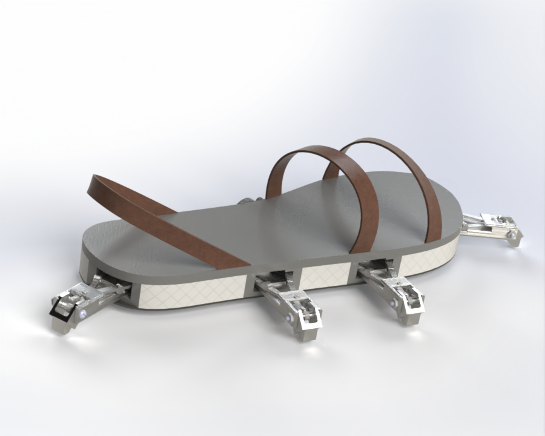

[Undisclosed]
Can't wait to share more info - Update soon!
Can't wait to share more info - Update soon!
The SpiderShoe is an engineered shoe attachment that is design to catch you when you fall. Aimed at aiding those struggling with vertigo and other balance-related issues, some of the most common health issues that adult face in the US. The SpiderShoe detects when its wearer begins to tip over, immediately deploys four legs to provide support to the wearer. These legs extend the wearer's base of support and allow them to regain their balance without suffering from a potentially dangerous tumble.
This group project involved designing, fabricating, and controlling a four-bar linkage mechanism capable of pressing randomly illuminated arcade buttons in a rapid sequence. The goal was to optimize both speed and accuracy using an Arduino Uno and tuning a PID controller. This system was modeled and analyzed in SOLIDWORKS, then manufactured piece-by-piece and wired/coded integrated for automated actuation.
Developed during a 24-hour school hackathon, this concept/prototype explores the use of a capstan-based folding mechanism to provide balance and counteract an impending fall. The design integrates a system of specifically-positioned rotating weights inside a backpack that spins in the opposite direction of a fall, counteracting inertia and helping the wearer regain balance. The prototype aimed to demonstrate how compact mechanical actuation could be applied to wearable safety technology for improved motion control and fall prevention.